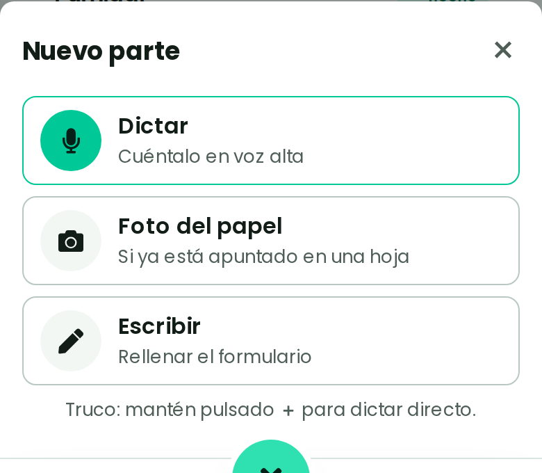

Registrar un parte con foto del papel
Tienes los partes en papel y no quieres teclearlos. Hazles una foto con el móvil: la app la lee y te deja cada parte como borrador, listo para revisar y guardar. No hace falta que la hoja sea de las nuestras: se lee cualquier hoja rellenada a mano, aunque las plantillas impresas se leen mejor porque llevan columnas, casillas y el contexto ya impreso. Nada se registra solo: hasta que no pulses «Guardar parte», lo leído es un borrador. La foto se conserva como justificante del parte.
Antes de empezar
- Pertenecer a una empresa. La foto se apunta a una empresa de las tuyas (si solo tienes una, ni se te pregunta).
- Rellenar la hoja con bolígrafo, no a lápiz. Cualquiera de las cinco plantillas impresas sirve: R-001 Parte diario de trabajo y cuadrilla, R-002 Parte de recolección, R-003 Parte de poda y aclareo a destajo, R-004 Parte de tractorista, R-005 Ficha de orden de tratamiento fitosanitario.
- Escribir menos: en las hojas de cuadrilla el horario va una sola vez en la cabecera, y la labor se marca en su casilla (A–I), no se escribe.
Pasos
-
Hazle la foto a la hoja. Que salga entera, de frente y con luz: la letra es lo único difícil. Puedes fotografiar varias hojas seguidas, o subir el PDF del escáner (cada página entra como una foto; como mucho 20 de una vez).
-
Abre «Nuevo parte» (el botón ＋ de la barra inferior del móvil, o el de la cabecera en el escritorio) y elige «Foto del papel» (en pantalla ancha se lee «Subir papel»). Se abre el selector: dispara con la cámara o elige de la galería. También puedes hacerlo desde la bandeja «Por revisar», con el botón «Subir fotos o PDF».

-
Espera (o cierra, da igual: lo tendrás en «Por revisar»). La foto se encoge en el propio móvil y sube por los pasos «Subiendo la foto», «En cola: se lee en unos segundos» y «Leyendo el papel». Si no hay cobertura, la foto se guarda en el móvil y se envía sola más tarde (véase Trabajar sin cobertura).
-
Revisa lo leído. Si la hoja traía un solo parte, la app te lleva directamente a «Revisar parte en papel»; si traía varios («He encontrado N partes. Te llevamos a revisarlos»), te lleva a la bandeja «Por revisar» y abres cada uno. En la revisión tienes la foto arriba, con lo leído tal cual («Leído en la foto»), y debajo cada dato en su fila: toca una fila para corregirla. Las filas con algo pendiente llegan abiertas y marcadas «Falta»; lo que no se ha podido casar con tus datos te lo dice («No encuentro «Rafa» entre tus trabajadores»). El lector nunca inventa: si algo no encaja, te lo pregunta.
-
Pulsa «Guardar parte». Ahí se registra de verdad. El borrador pasa a «✓ Guardado» y la foto se queda guardada como justificante (se conserva 3 años, como pide el cuaderno). Si el parte necesita todos los campos del formulario clásico, el enlace «Editar todo en el formulario completo» te lleva a él.
-
Vuelve a la bandeja «Por revisar» para lo que quede: la pestaña «Pendientes» lista lo que espera (… Procesando, ◷ Por revisar, ✓ Sin dudas), y con el botón «Validar los N sin dudas» guardas de un clic los borradores que no tienen nada que preguntar. La pestaña «Historial» es la auditoría de lo guardado y lo descartado.
Si algo va mal
- «No se pudo leer» («No he encontrado ningún parte legible en la foto», o «No hemos podido leer la foto. Apúntalo a mano o prueba con otra foto más cerca y con luz.») → la foto sigue en la bandeja «Por revisar»: ábrela con «Ver la foto de la hoja», apunta el parte a mano o pulsa «Volver a intentar» con otra foto mejor (más cerca, con luz, la hoja entera).
- «Ese envío ya existe.» → ese envío lo subió otra persona. No se crea ningún duplicado.
- «Has llegado al máximo de envíos de hoy. Se mandará solo más tarde.» → no se pierde: la foto queda en la cola del móvil y sube sola al día siguiente.
- «La hoja no dice la fecha: he puesto la de la foto.» → revisa la fecha antes de guardar; si la hoja no la trae, no se deduce.
- «Caducado: nadie lo confirmó en 30 días.» → un borrador al que nadie hizo caso se descarta solo.
- Fallo del servicio de lectura («El servicio estaba caído o saturado») → si la culpa es nuestra, la propia bandeja te dirá que le des a «Volver a intentar» cuando esté arreglado; el resto de casos, nueva foto.